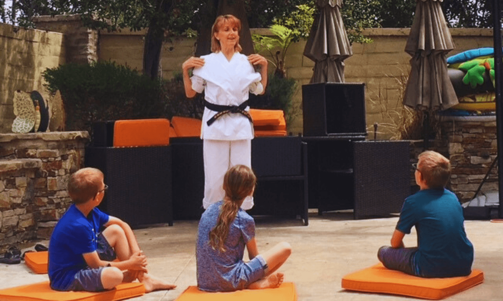

The Sacred Return
A sacred, 1-on-1 somatic journey for the high-functioning, deeply exhausted woman who gives everything to everyone else—and has quietly forgotten who she is.

Sometimes, the advice everyone gives — "just love yourself," "take more me-time" — but that's not the answer that quiets the ache in your soul.
Countless women stay stuck, believing they have to try harder, when the truth is they need to be held differently.
That wasn't a fairy tale.
That was before you started carrying the weight of a world that was never yours to hold.
You've tried to be the perfect mom who never drops the ball, the wife who keeps everyone emotionally afloat, and the ambitious woman climbing the corporate ladder working late nights — all while dragging an invisible backpack filled with everyone's expectations, and no room left for your own breath.
It doesn't have to be this way.
The Guide
I guide women from the exhaustion of over-giving back to their own sacred center.
The struggle is a soul-deep ache, and I know this place because I've walked it.
As a Black Belt and Somatic Guide, I know what it means to fight, to protect, and to survive. But true strength isn't about how much you can carry without breaking—it's about how willing you are to finally release it.
After navigating my own dark nights of the soul and years of traditional therapy, I realized the hard truth:
No amount of intellectualizing your pain will shift you. You cannot think your way into feeling better. Through Guided Accelerated Evolution, I hold the impeccable, fierce space needed to release those emotional patterns from your body entirely—in hours, not years.
You forget to eat until 3 PM because you were busy surviving and serving everyone else's needs first.
You rage-clean the kitchen or snap at your partner — the pressure valve releasing for everything you've swallowed.
You walk past the mirror and whisper "what happened to me?"—avoiding the reflection of a woman you no longer recognize.
You scroll your phone for hours in bed, numb and unsure how your life—and your heart—got so far off track.
You say "I'm fine" even when you're falling apart inside, because you feel you can't break down without losing everything.
You can't remember the last time you felt truly sexy or alive in your body; intimacy feels more like a duty than a home.
You need a space where you can stop managing your pain and finally release it. You need powerful guided exercises.
There is so much misinformation keeping you running in circles, trying to think your way into feeling better. But true, lasting transformation is not an intellectual process. It is an embodied return.
The Process
We begin with a sacred, powerful Clarity Call. This is where we strip away the stories, locate the root of your exhaustion, and find the truth you've been afraid to speak.
Through Guided Accelerated Evolution, I create an impeccable container for you to safely locate, feel, and completely release the emotional blocks stored in your nervous system. You don't relive trauma; you let it go.
You don't just feel better—you are fundamentally shifted. You return to your life with radical self-trust, deeply connected to your inner power, breathing freely again in your own body.
Programs & Classes
A sacred circle where women come together to shed the armor, reconnect with their bodies, and remember who they are. Through powerful guided exercises, somatic release, and deep sisterhood, this class is a weekly homecoming—a place to be witnessed, held, and transformed.
Join the CircleReclaim your physical and emotional boundaries. As a Black Belt, Cindy teaches practical self-defense rooted in confidence, awareness, and unshakeable inner strength. These classes are about remembering that your body is your home, and you have every right to protect it.
Claim Your PowerFAQs
Truths for the Tender and Brave Heart
A clarity call is the first step to finding your way back.
Book Your Sacred Conversation